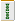

（106)スーパーリング解答
３つのリングに索子36枚が配置されている。そして自分のリング内の14枚は、それぞれ異なった役満のアガリとなっている。このような配列の一例を示して欲しい。なお重なり部分の牌は、共通牌として使用する。（bu ASAM I & NAGATA）
ハンバート 投稿日：2006/09/04(Mon)
スーパーリングの回答を下記のように作成いたしました。
A：
B：
C：
D：
E：
F：
G：
上のリングはABCDによって


緑一色
は明槓（暗槓でなく明槓にして、四暗刻を消しました）
左のリングはBCEFによって、
四暗刻
右のリングはCDFGによって
、
ということでどーでしょうか。
なおＡの15枚について、問題文中の「自分のリング内の14枚は、それぞれ役満のアガリとなっている。」というのが気になりました。
つまり、15枚の中からどの14枚を取り出しても役満の和了りになっている形が題意かと思いましたが、そのような形が思い浮かばなかったため上記の回答となりました。
あさみ 投稿日：2006/09/04(Mon)
正解で〜す。(^-^)/
>（暗槓でなく明槓にして、四暗刻を消しました）
な〜るへそ。暗槓にするとＷ役満になってしまいますね。（^-^；
> 「自分のリング内の14枚は、それぞれ役満のアガリとなっている。」
これは、これは....正しくは「 「自分のリング内の手牌は」とすべきでした。m(_ _)m